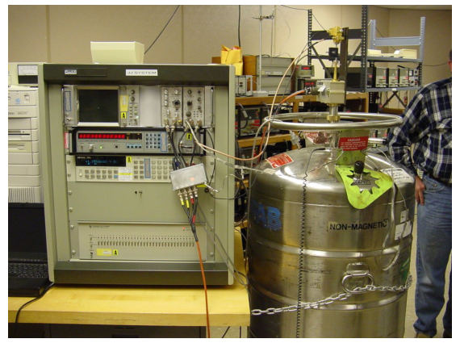

The original, as published: Tony R. Kuphaldt, Lessons In Industrial Instrumentation, Turndown and traceability. CC BY 4.0, https://creativecommons.org/licenses/by/4.0/. Imported as published, from https://www.ibiblio.org/kuphaldt/socratic/sinst/book/liii.pdf https://www.ibiblio.org/kuphaldt/socratic/sinst/book/liii.pdf
An important performance parameter for transmitter instruments is something often referred to as turndown or rangedown. “Turndown” is defined as the ratio of maximum allowable span to the minimum allowable span for a particular instrument. Suppose a pressure transmitter has a maximum calibration range of 0 to 300 pounds per square inch (PSI), and a turndown of 20:1. This means that a technician may adjust the span anywhere between 300 PSI (e.g. range = 0 to 300 PSI) and 15 PSI (e.g. range = 0 to 15 PSI). This is important to know in order to select the proper transmitter for any given measurement application. The odds of you finding a transmitter with just the perfect factory-calibrated range for your measurement application may be quite small, meaning you will have to adjust its range to fit your needs. The turndown ratio tells you how far you will be able to practically adjust your instrument’s range.
For example, suppose you were working at a facility where the operations personnel requested a pressure transmitter installed on a process vessel with a measurement range of 50 PSI to 90 PSI. You go to the warehouse where all the new instruments are stocked, and find a pressure transmitter with a (maximum) range of zero to 1000 PSI, and a turndown ratio of 20:1. Dividing the maximum span of 1000 PSI by 20, we arrive at a minimum span of 50 PSI. The span requested by operations for this pressure transmitter is 40 PSI (90 PSI −50 PSI), which means the transmitter you found in the warehouse will not be able to “turn down” that far. At best, we could range it for 50 PSI to 100 PSI, or perhaps for 40 PSI to 90 PSI, but not the 50 PSI to 90 PSI requested by operations. At this point, you could return to the operations personnel to ask if a 50 PSI span would be acceptable – if not, you will have to order a different pressure transmitter with a smaller span (or with a greater turndown ratio10).
Another important consideration with turndown is the accuracy of the instrument at the stated turndown. The further an instrument is “turned down” from its maximum span, generally the worse its accuracy becomes at that reduced span. For example, the Micro Motion “ELITE” series of Coriolis mass flowmeters11 are advertised to perform within an accuracy envelope of ±0.05% at turndown ratios up to 20:1, but that measurement uncertainty increases to ±0.25% at a turndown of 100:1, and to ±1.25% at a turndown of 500:1. It should be noted that the degradation of measurement accuracy at large turndown ratios is not some defect of Micro Motion flowmeters (far from it!), but rather an inescapable consequence of pushing an instrument’s turndown to its limit.
10Modern “smart” electronic pressure transmitters typically boast turndown ratios exceeding 100:1, with some having turndown ratios of 200:1 or more! Large turndown ratios are good because they allow users of instrumentation to maintain a smaller quantity of new transmitters in stock, since transmitters with large turndown ratios are more versatile (i.e. applicable to a wider variety of spans) than transmitters with small turndown ratios. 11According to Emerson product datasheet PS-00374, revision L, June 2009.
As defined previously, calibration means the comparison and adjustment (if necessary) of an instrument’s response to a stimulus of precisely known quantity, to ensure operational accuracy. In order to perform a calibration, one must be reasonably sure that the physical quantity used to stimulate the instrument is accurate in itself. For example, if I try calibrating a pressure gauge to read accurately at an applied pressure of 200 PSI, I must be reasonably sure that the pressure I am using to stimulate the gauge is actually 200 PSI. If it is not 200 PSI, then all I am doing is adjusting the pressure gauge to register 200 PSI when in fact it is sensing something different. Ultimately, this is a philosophical question of epistemology: how do we know what is true? There are no easy answers here, but teams of scientists and engineers known as metrologists devote their professional lives to the study of calibration standards to ensure we have access to the best approximation of “truth” for our calibration purposes. Metrology is the science of measurement, and the central repository of expertise on this science within the United States of America is the National Institute of Standards and Technology, or the NIST (formerly known as the National Bureau of Standards, or NBS). Experts at the NIST work to ensure we have means of tracing measurement accuracy back to intrinsic standards, which are quantities inherently fixed (as far as anyone knows). The vibrational frequency of an isolated cesium atom when stimulated by radio energy, for example, is an intrinsic standard used for the measurement of time (forming the basis of the so-called atomic clock). So far as anyone knows, this frequency is fixed in nature and cannot vary: each and every isolated cesium atom has the exact same resonant frequency. The distance traveled in a vacuum by 1650763.73 wavelengths of light emitted by an excited krypton-86 (86Kr) atom is the intrinsic standard for one meter of length. Again, so far as anyone knows, this distance is fixed in nature and cannot vary. This means any suitably equipped laboratory in the world should be able to build their own intrinsic standards to reproduce the exact same quantities based on the same (universal) physical constants. The accuracy of an intrinsic standard is ultimately a function of nature rather than a characteristic of the device. Intrinsic standards therefore serve as absolute references which we may calibrate certain instruments against.
The machinery necessary to replicate intrinsic standards for practical use is quite expensive and usually delicate. This means the average metrologist (let alone the average industrial instrument technician) simply will never have access to one. While the concept of an intrinsic standard is tantalizing in its promise of ultimate accuracy and repeatability, it is simply beyond the reach of most laboratories to maintain. An example of an intrinsic standard is this Josephson Junction array in the primary metrology lab at the Fluke corporation’s headquarters in Everett, Washington:

A Josephson junction functions as an intrinsic standard for voltage, generating extremely precise DC voltages in response to a DC excitation current and a microwave radiation flux. Josephson junctions are superconducting devices, and as such must be operated in an extremely cold environment, hence the dewar vessel filled with liquid helium in the right-hand side of the photograph. The microwave radiation flux itself must be of a precisely known frequency, as the Josephson voltage varies in direct proportion to this frequency. Thus, the microwave frequency source is synchronized with the NIST’s atomic clock (another intrinsic standard). While theoretically capable of generating voltages with uncertainties in the low parts per billion range, a Josephson Array such as this one maintained by Fluke is quite an expensive12 beast, being too impractical for most working labs and shops to justify owning. In order for these intrinsic
12According to the book Philosophy in Practice (second edition) published by Fluke, the initial expense of their Josephson Array in 1992 was $85000, with another $25000 budgeted for start-up costs. The annual operating cost of the array is approximately $10000, mostly due to the cost of the liquid helium refrigerant necessary to keep the Josephson junction array at a superconducting temperature. This consumable cost does not include the salary of the personnel needed to maintain the system, either. Presumably, a metrology lab of this caliber would employ several engineers and scientists to maintain all standards in top condition and to perform continuing metrological research.
standards to be useful within the industrial world, we use them to calibrate other instruments, which are then used to calibrate other instruments, and so on until we arrive at the instrument we intend to calibrate for field service in a process. So long as this “chain” of instruments is calibrated against each other regularly enough to ensure good accuracy at the end-point, we may calibrate our field instruments with confidence. The documented confidence is known as NIST traceability: that the accuracy of the field instrument we calibrate is ultimately ensured by a trail of documentation leading to intrinsic standards maintained by the NIST. This “paper trail” proves to anyone interested that the accuracy of our calibrated field instruments is of the highest pedigree.